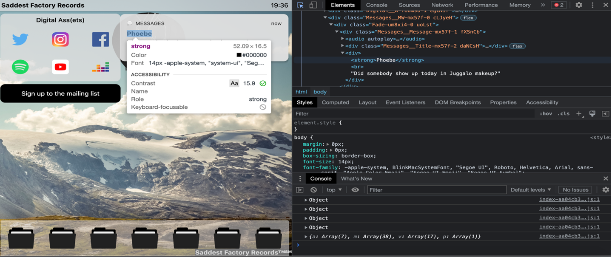

Website Design
Your website is your face to the world online, which is where most potential customers will interact with you, especially for the first time.
Visitors to your website expect to find up-to-date, relevant information about you in a format that is representative of your brand and values.
Many organizations outsource website design and development, but a working knowledge of HTML and CSS will give you the power to change and update your website on your own. I learned HTML and CSS through Codecademy's free lessons and tutorials, and I used those skills to build my website from scratch!
Once you understand HTML and CSS, you can use the “Inspect Element” tool in your browser to view the source code of any website you want. Simply find a website element you like and might want to incorporate into your website, right-click on the element and select “Inspect.” Alternatively, you can view the source code for any webpage by enabling the “Inspect Elements” tool. Then, you can click any element on the page to highlight its source code.

According to Contentsquare’s 2021 Digital Experience Benchmark report, the average time spent on a webpage across all industries was less than a minute, so to make the most of the short time you have with potential customers visiting your website, here are my three tips for website design:
1. Your website design should be driven by your brand guidelines and message, keeping target audiences in mind.
Your website should be aligned stylistically with all your other brand content and instantly recognizable. It’s also important to remember throughout the website design process who your target audiences are and how they communicate. Should you use a formal tone or more colloquial language? Will users be visiting your website on desktops or mobile devices? Will they want to read text or would they rather see graphics or watch videos?
2. Your website should be accessible and engaging.
Your website should be easy to navigate. The information most users want to know when visiting your website should appear first, and the features, like colors, graphics and sounds, should be meaningful and invite users to click through to find more information about you.
3. Your website should include data collection capabilities, and you should update your website regularly.
Google Analyticsis a free service to help you track website activity like session duration, bounce rate and information about the source of the traffic to your website. Google also offers Google Search Console to help you monitor, maintain and troubleshoot your website's presence in Google Search results for free. Update your website regularly with new information about your organization and format changes informed by the data you collect. Changes to websites can be confusing for users, so make sure the changes you make will simplify your users’ experience rather than complicate it.
If you’re not familiar with programming or web development, designing and maintaining a website can seem overwhelming. Remember, stick to your brand, keep it user-friendly and simple and rely on your data to drive your decisions.